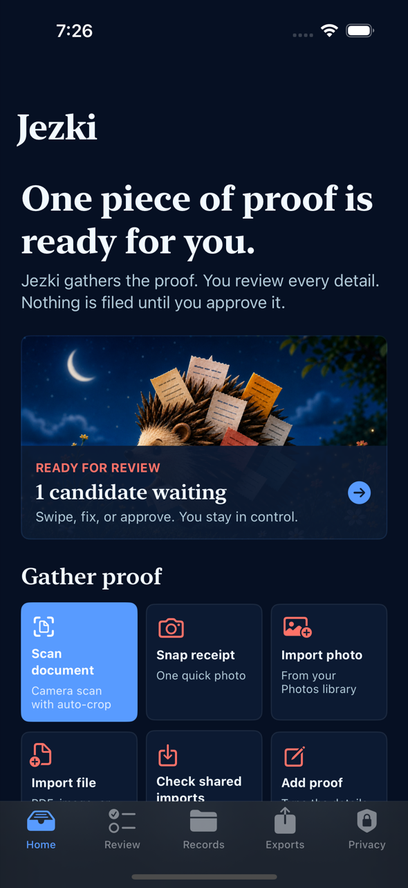
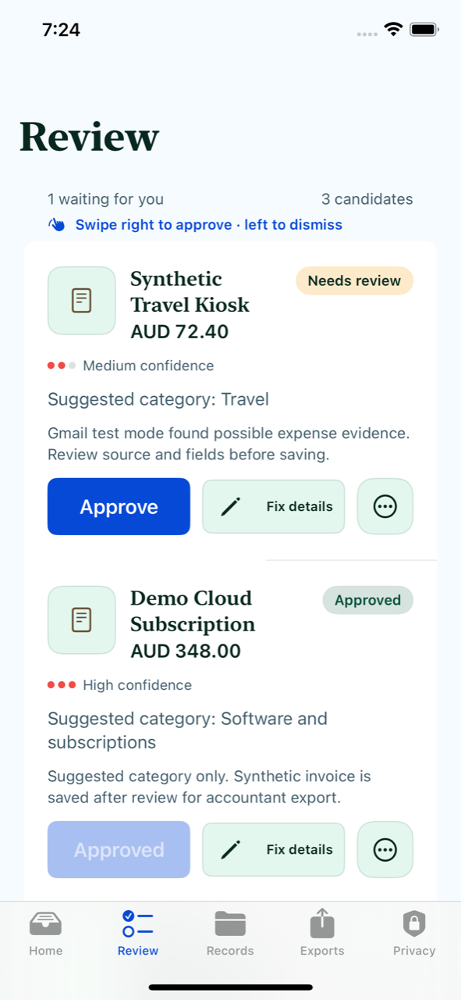
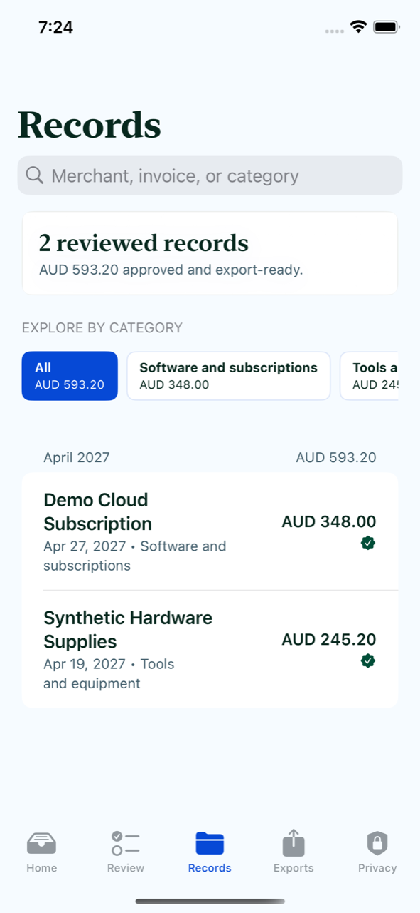

Gather
Everything finds one place.
Scan a document, snap a receipt, import from Photos or Files, check the share sheet, or add proof by hand.
Private expense evidence for iPhone
From receipt chaos to ready for review.
Jezki gathers receipts, invoices, PDFs, screenshots, shared files, and manual entries into one small queue. You check every suggestion. Nothing is filed until you approve it.
Private expense evidence, ready for review.
A calmer middle
Jezki keeps the original evidence, suggests the useful parts, and puts each possible record in front of you. Swipe right to approve, left to dismiss, or open the details when something needs care.
Gather
Scan a document, snap a receipt, import from Photos or Files, check the share sheet, or add proof by hand.
Review
Merchant, date, amount, tax, and category stay suggestions until you approve them. Possible duplicates can be fixed or merged.
Export
Create an accountant-ready pack from records you have approved, then choose where to share it.
Made for the moment after capture
Gather proof in seconds, make the decision while it is still fresh, and find reviewed records without digging through another crowded folder.



Built for real-world mess
Jezki is designed around the places evidence actually hides, without pretending every document arrives neatly.
Quick photos and document scans with the original saved first.
Local text extraction and on-device OCR create suggestions for review.
Choose exactly what Jezki may inspect from your library.
Send a file to Jezki without breaking your current workflow.
Type the details when the evidence does not fit a familiar shape.
With explicit permission, likely invoices could enter Review. Current builds use Gmail test mode only.
Local-First By Default
Current builds keep evidence and review metadata on your device by default. There is no account requirement, advertising profile, or silent filing path.
Read the complete privacy policyClear boundaries
Jezki organises private expense evidence and suggests fields for your review. It does not provide tax advice, decide what can be deducted, take the place of an accountant or adviser, validate records with a tax authority, guarantee savings, or file records on its own.
Production Gmail access, final support contact details, and final public URLs remain gated until the required verification and owner approval are complete.
First questions
No. The current app is designed to work locally without a mandatory account or backend service.
Current builds use a local Gmail test mode only. Any future production inbox discovery must be optional, transparent, pausable, disconnectable, and verified before release.
No. Every possible record waits for your review, and exports happen only when you create and share them.
The owner-approved support destination is still pending. The support page documents the available in-app controls and current boundaries.
Meet the queue keeper